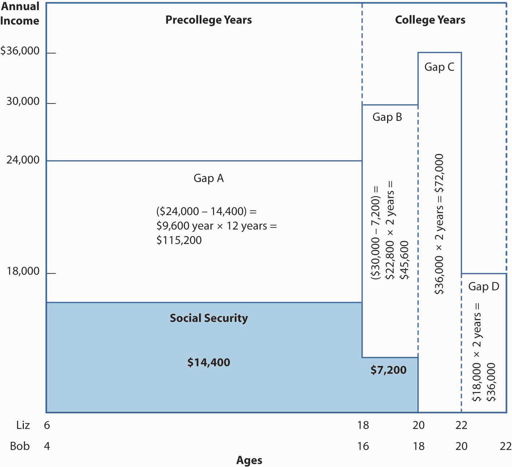

In this section, the income continuation needs for a single-parent family, the Dowds, will be evaluated to see how much life insurance is necessary. Although the various types of life insurance products will be discussed at length in Chapter 19 "Mortality Risk Management: Individual Life Insurance and Group Life Insurance", this exercise is intended to satisfy the needs analysis approach to dealing with mortality risk. The risk management component of the financial planning process will be used to look at the family’s present resources, income needs, and insurance needs in the event of the wage earner’s death. Coverages for property and casualty, health, disability, and retirement are covered in Case 1 of Chapter 23 "Cases in Holistic Risk Management".
The Dowd family has three members:
Liz and Bob see a pediatrician at least once a year. Sharon had a routine checkup about six months ago. All three are apparently healthy.
Sharon is a branch bank manager whose gross yearly income is $50,000. Her former husband lives in another state and does not pay alimony or contribute to child support.
A balance sheet and cash flow statement are important in evaluating Sharon’s current ability to meet her needs and in establishing postloss objectives. Sharon has constructed Table 17.7 "Sharon Dowd’s Balance Sheet (End of Year Market Value)" and Table 17.8 "Sharon Dowd’s Annual Cash Flow Statement". On the balance sheet, you may wonder why the value of furniture and other personal property is only $10,000. The sums listed are liquidation values; these items probably have a replacement value between $30,000 and $40,000. But our concern, in the event of Sharon’s death, is how much the items would sell for if they had to be liquidated to meet family income needs. Unlike houses and automobiles, limited demand exists for used furniture and clothing.
Table 17.7 Sharon Dowd’s Balance Sheet (End of Year Market Value)
| Assets | |
| Checking account | $ 500 |
| Certificates of deposit | 3,000 |
| Life insurance cash values | 4,500 |
| 401(k) retirement plan (vested value) | 15,000 |
| Automobile | 10,000 |
| House | 85,000 |
| Furniture and other personal property | 10,000 |
| Total | $ 128,000 |
| Liabilities | |
| Credit card balances | $ 1,000 |
| Other household account balances | 500 |
| Automobile loan balance | 8,000 |
| Life insurance loan against cash values | 4,000 |
| Home mortgage balance | 75,000 |
| Total | $ 88,500 |
| Net Worth | $ 39,500 |
Table 17.8 Sharon Dowd’s Annual Cash Flow Statement
| Income | |
| Sharon’s salary | $50,000 |
| Investment income | * |
| Total cash flow | $ 50,000 |
| Taxes | |
| Social Security | $ 3,825 |
| Federal income | $4,300 |
| State income | $1,700 |
| Total SS and income taxes | $9,825 |
| Disposable personal income | $40,175 |
| Expenses | |
| State sales taxes | $1,300 |
| Personal property taxes (home and auto) | $1,175 |
| $401(k) retirement savings contribution | $2,000 |
| Dependent medical & dental insurance | $1,500 |
| House payments, including homeowner’s insurance | $8,900 |
| Utilities | $2,700 |
| Food | $3,200 |
| Automobile payments and expenses | $3,600 |
| Child care | $4,500 |
| Clothes | $1,800 |
| Miscellaneous expenses | $9,000 |
| Total | $39,675 |
| Savings | $500 |
| * Investment earnings of approximately $1,500 are being reinvested in the certificates of deposit and 401(k) plan. | |
|---|---|
The family has four types of basic resources in addition to the assets shown in Table 17.7 "Sharon Dowd’s Balance Sheet (End of Year Market Value)". These resources are provided by the following:
Based on Sharon’s earnings history, we estimate that the following Social Security
benefits would be available to her and/or the children in the event of her death. Survivor benefits are expected (based on the current Social Security law) to keep pace with inflation.
Sharon’s death: $255 burial allowance plus $600 per month survivor benefits to each child until each is age 18 (or age 19 if still a full-time high school student)
Sharon’s employee benefit plan at the bank where she works provides her and the children with the benefits outlined in Table 17.9 "Sharon Dowd’s Employee Benefits" (such benefits will be described in Chapter 19 "Mortality Risk Management: Individual Life Insurance and Group Life Insurance" to Chapter 22 "Employment and Individual Health Risk Management").
Table 17.9 Sharon Dowd’s Employee Benefits
|
Group Life Insurance
Short-Term Disability Paid sick leave equal to income for 90 days Long-Term Disability Long-term disability (LTD) income to age 70 equal to two-thirds of annual salary in last year of employment, minus total Social Security and employer-provided pension benefits; 90-day waiting period; no adjustment for inflation. Group Comprehensive Preferred Provider Medical Care
Dental Coverage
401(k) Plan Employer matches 50 percent of employee contributions up to a maximum employee contribution of 6 percent of basic pay, subject to the annual maximum limit on 401(k) contributions. Defined-Benefit Pension Plan Pension at age sixty-five equal to 40 percent of average final three years salary, minus half of primary Social Security retirement benefit, with no provision for benefits to increase after retirement. Early retirement is allowed between ages 60 and 65, subject to a reduction in benefits. Reductions equal 4 percent for each year the retiree is below age sixty-five. |
Sharon has a $15,000 whole life insurance policy that her parents purchased when she was young and turned over to Sharon when she finished college. Sharon recently borrowed most of the policy’s $4,500 cash value to help make the down payment on the family home. She purchased credit life insurance to cover the balance of her automobile loan. She has not purchased life or disability insurance associated with her home mortgage.
At the present time, Sharon’s personal savings and investments are small, consisting of $3,000 in certificates of deposit at her bank and a $15,000 vested value in her 401(k) plan. Her yearly savings of $500 are 1 percent of her gross income. In addition, she is contributing 4 percent of gross income to her 401(k) plan, and her employer matches 50 percent of this amount. If these saving rates can be continued over time and earn reasonable returns, her total savings and investments will grow quickly.
In the event of her premature death, Sharon would like her children to live with her sister, Kay, and Kay’s husband, Robert, who have expressed a willingness to assume these responsibilities. However, Sharon has not formally created a legal document expressing this wish. Kay and Robert have three small children of their own, and Sharon would not want her children to be a financial burden to them. Taking care of her children’s nonfinancial needs is all that Sharon expects from Kay and Robert.
Sharon’s values influence her objectives. Her parents paid almost all her expenses, including the upkeep of a car while she earned a bachelor’s degree. Sharon recognizes that her children are currently benefiting from her above-average income. When they reach college, she wants them to concentrate on their studies and enjoy extracurricular activities without having to work during the academic year. They would be expected to work during the summers to earn part of their spending money for school. Sharon decides that, if she dies prematurely, she wants to provide $12,000 per year before taxes for each child through age seventeen, when they will graduate from high school, both having been born in August. During their four years of college, Sharon wants $18,000 per year available for each child. She realizes that inflation can devastate a given level of income in only a few years. Thus, she wants her expressed objectives to be fulfilled in real (uninflated) dollars. We will present a simple planning solution to this problem.
The next step in the financial planning process requires determining the following:
Determination of the amount of money required to meet Sharon’s objectives for her children in the event of her premature death is complicated by the following:
With some simplifying assumptions, these problems can be solved by a technique that we will call life insurance planningA technique that considers only the worst possible scenario.. The technique is static in the sense that it considers only the worst possible scenario: Sharon dies this year. Also, the technique does not recognize various changes (e.g., remarriage and a third child) that could occur at some point during the planning period.
Figure 17.9 "Family Income Objectives If Sharon Dies—Hypothetical Data (Social Security Amounts Are Not Actual)" reflects the assumption that Sharon dies today by showing Liz’s and Bob’s current ages on the left, on the horizontal axis. The figure continues until Sharon’s objectives are met when Bob is assumed to complete college at age twenty-two.
Figure 17.9 Family Income Objectives If Sharon Dies—Hypothetical Data (Social Security Amounts Are Not Actual)
Both the required amounts of income and Social Security benefits are shown in real (uninflated) dollars.
The vertical axis in Figure 17.9 "Family Income Objectives If Sharon Dies—Hypothetical Data (Social Security Amounts Are Not Actual)" shows Sharon’s real income objective of $12,000 per year, per child, prior to age eighteen. Sharon plans for much of this money to be spent by her sister and brother-in-law for her children’s food, utilities, transportation, child care, school expenses, and other basic needs. She does not plan for her children to have excessive amounts of spending money. During college, each child has $18,000 per year, which will provide financial access to modestly priced private colleges and out-of-state universities. The maximum annual need of $36,000 per year, depicted in Figure 17.9 "Family Income Objectives If Sharon Dies—Hypothetical Data (Social Security Amounts Are Not Actual)", occurs during the last two years of Liz’s planned college period, when it is assumed that Bob will have begun college. Social Security benefits begin at $14,400 and remain at this level (in real terms) until Liz’s benefit terminates at age eighteen. Bob’s benefit of $7,200 continues until he is age eighteen.
Looking at the differences (gaps A through D in Figure 17.9 "Family Income Objectives If Sharon Dies—Hypothetical Data (Social Security Amounts Are Not Actual)") between Sharon’s objectives and the income expected from Social Security, we see an increase in the size of the gaps as Social Security payments decline and then stop when Bob’s college years begin. The simplest way to summarize the amount of the gaps is to add the following:
| ($24,000 – 14,400) × (12 years) | $115,200 |
| ($30,000 – 7,200) × (2 years) | $45,600 |
| ($36,000) × (2 years) | $72,000 |
| ($18,000) × (2 years) | $36,000 |
| Total | $268,800 |
This period while the children remain dependent is called the family dependency periodA period wherein the children remain dependent to their parents.. A subsequent period during which support might be provided to a spouse is not depicted because Sharon is not married. Such a period may be called a spousal dependency periodA period during which support might be provided to a spouse..
What are the problems with saying that $268,800 is needed to fulfill Sharon’s objectives, assuming she dies now? Reviewing our list of seven complications, we can recognize two major problems. First, inflation is likely to increase her nominal (inflated dollar) needs. Current Social Security legislation provides for annual benefit increases to reflect the lesser of either inflation or wage increases over time. Thus, we can assume that real-dollar Social Security benefits will increase approximately at the rate of inflation. Our concern becomes the effect of inflation on the gap between total income needs and Social Security. In the first year, we know this gap is $9,600. If there is 4 percent inflation, the gap in nominal dollars would be $13,664 by the beginning of the tenth year and $64,834 by the beginning of the sixteenth year, the second year when both Liz and Bob are expected to be in college. Our $268,800 total understates the nominal dollar need substantially.
Second, we have ignored the opportunity to invest the lump-sum insurance benefits (existing and yet to be purchased) and net worth. With such an opportunity, investment earnings would provide part of the future cash flow needs. Unlike the possibility of inflation, the failure to recognize this time value of money overstates the size of the gaps.
Sharon may use the $268,800 figure depicted above if she is willing to assume that the net return on investments will be just sufficient to cover the rate of expected inflation. This is not an unrealistic assumption for the conservative investor, who would make low-to-medium risk/low-to-medium expected return investments. Relatively conservative investments may be suitable when the purpose is the safety of the principal that is invested with the objective of supporting two children following the death of the person who is their sole financial support (other than Social Security). The static life insurance planning technique produces approximate, rather than exact, estimates of death needs.
At this point, we have only estimated Sharon’s gross death needs for the family dependency period.
Total death needs for most situations can be grouped into four categories:
We have looked only at the family dependency period. To complete Sharon’s financial planning for death, assume that her final expenses consist of funeral costs of $4,500, $1,500 to pay her current bills, and $3,000 for an executor to settle her estate. Nothing is required to fund a spousal dependency period in Sharon’s case. The special needsIs a category that could include college expenses that we have placed in the family dependency period, care of a dependent parent, or other expenses that do not fit neatly in the other three categories. category could include college expenses that we have placed in the family dependency period, care of a dependent parent, or other expenses that do not fit neatly in the other three categories.
Sharon’s total needs above Social Security are the following:
| Final expenses | $9,000 |
| Family dependency period | $268,800 |
| Total needs | $277,800 |
Life insurance is a substitute for other assets that, for one reason or another, at the current time have not been accumulated. Thus, the need for new life insurance as a result of the life insurance planning process consists of the following:
Are Sharon’s current net worth and life insurance adequate to meet her objectives if she dies now? From the balance sheet provided earlier, we know that she has a net worth of $39,500.It is feasible that all furniture, jewelry, and so on would be liquidated. In a two-parent family, the surviving spouse might want to retain the house and all furnishings. This is a liquidation value that is the net of sales commissions, depreciation, and other value-reducing factors. Her current life insurance consists of a $100,000 term policy through her employer and a $15,000 individual policy. The proceeds from the individual policy will be $11,000 after the insurer deducts the $4,000 loan. Her automobile loan will be paid by credit life insurance. We show this loan repayment below as a life insurance resource. Sharon’s net needs after recognizing existing resources are as follows:
| Total needs | $277,800 | |
| Resources (minus): | ||
| Net worth | $ 39,500 | |
| Group life insurance | $100,000 | |
| Individual life insurance | $11,000 | |
| Credit life insurance | $8,000 | $158,500 |
| Net needs | $119,300 | |
Sharon could resolve this $119,300 shortage in one of three ways. First, she could reevaluate her objectives, decide to lower the amount of financial support for Liz and Bob, and calculate a lower total. Second, she could decide to tighten her budget and increase her savings/investment program. Third, she could buy an additional life insurance policy in the amount of, let’s say, $125,000. Life insurance premiums would vary upward from approximately $175 for next year for an annual renewable term policy to higher amounts for other types of insurance. Buying additional life insurance is probably Sharon’s best option. Savings as an alternative to life insurance is not a good solution because she could die before contributing much to her savings program. Nevertheless, she should continue to save.
Sharon’s situation certainly does not cover all planning possibilities. For example, a person with a disabled child might want to extend the family dependency period far beyond age twenty-two. Another person might want to contribute to a spouse’s support for the remainder of his or her life. In this case, a good option is using the life insurance planning technique to quantify the need up to an advanced age, such as sixty-five, and getting price quotations on a life annuity for the remainder of the person’s lifetime.